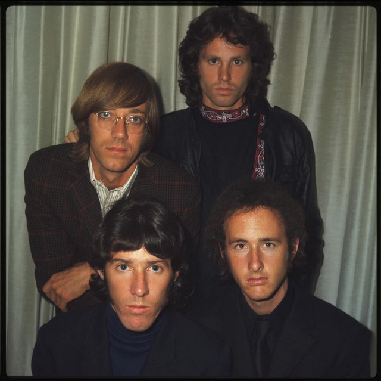
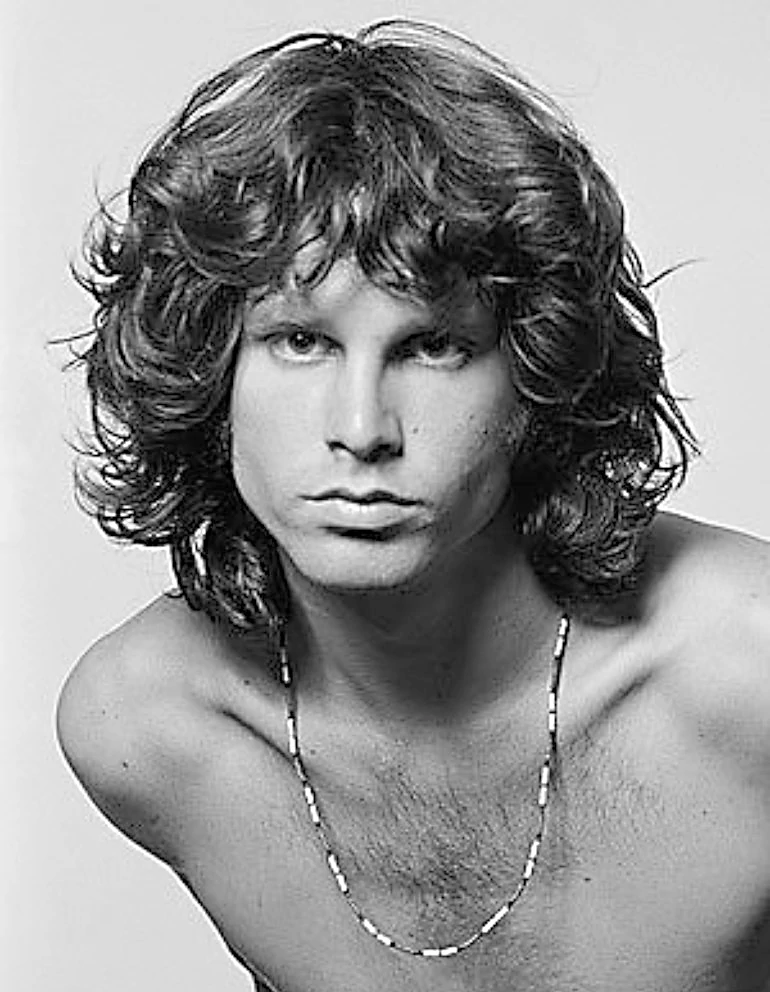
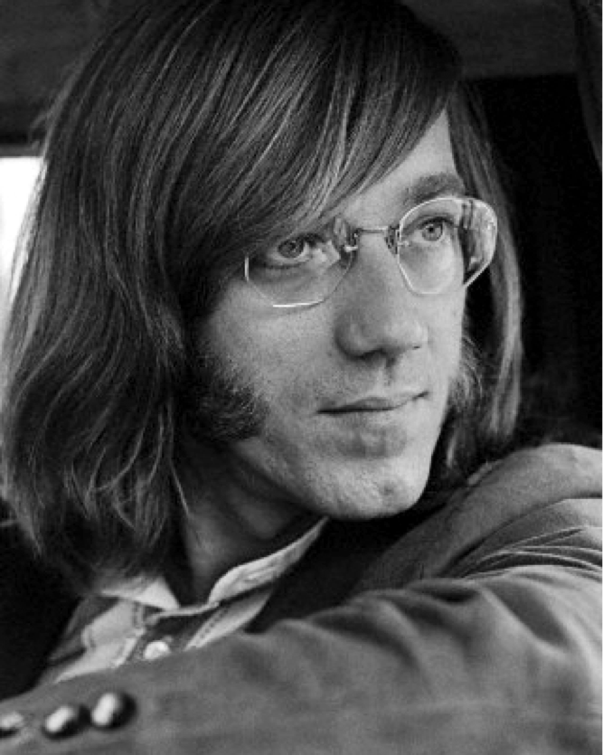
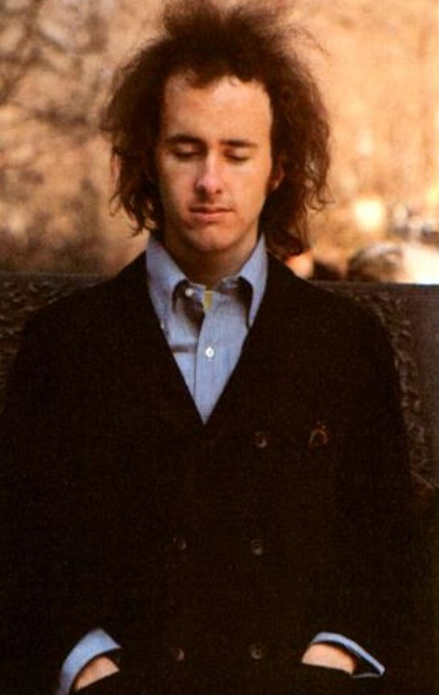
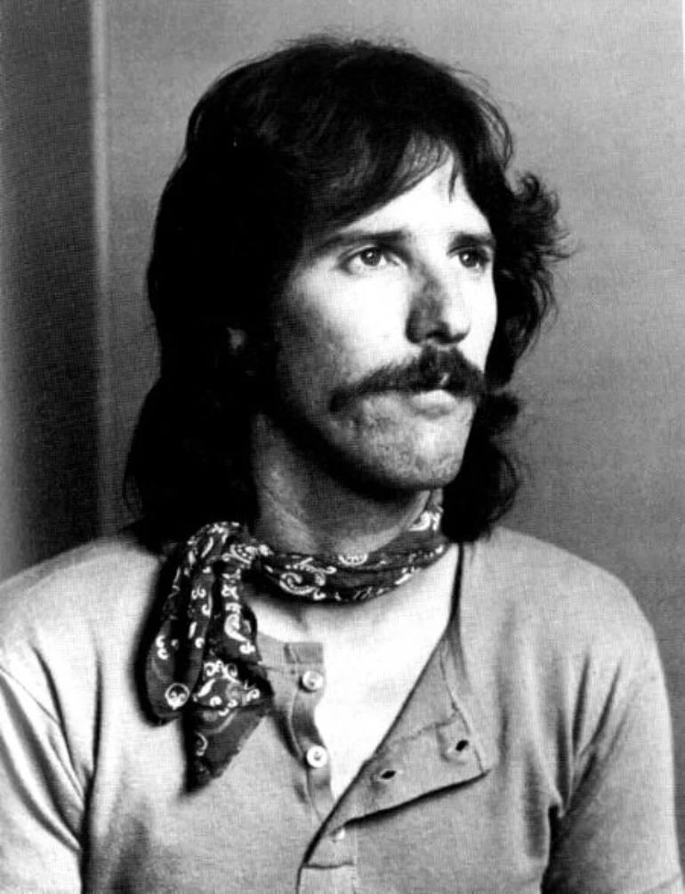

Información
The Doors fue una banda de rock estadounidense formada en Los Ángeles en 1965, con el vocalista Jim Morrison, el teclista Ray Manzarek , el guitarrista Robby Krieger y el baterista John Densmore . Estuvieron entre los actos de rock más controvertidos e influyentes de la década de 1960, en parte debido a las letras y la voz de Morrison, junto con su personalidad errática en el escenario, y el grupo también es ampliamente considerado como una parte importante de la contracultura de la época.
Integrantes
Jim Morrison: Vocalista

Ray Manzarek: Teclista

Robby Krieger: Guitarrista

Phil X: Guitarrista
John Densmore: Baterista

Canciones
 |
||||
 |